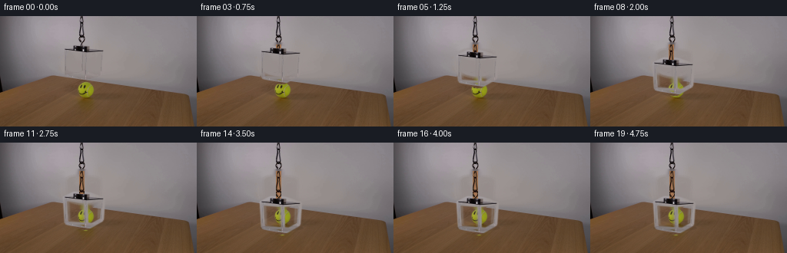
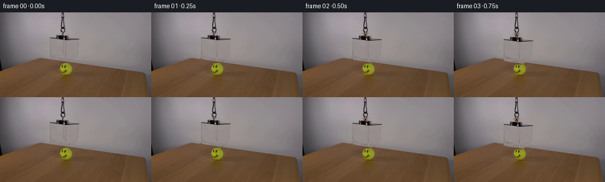

CODING AGENTS AS PIXEL WORLD MODELS
traex/GPT-5.6-Sol · 0099
点击播放 · 原生 RGB 像素
逐轮保存的候选
回放视频、检查图与代码变化。
每份候选均可单独播放。实际图片检查记录在下方工具轨迹中。
候选 01播放与检查图
点击播放 · 原生 RGB 像素

展开代码变化
--- 上一保存版本
+++ 本次保存版本
@@ -0,0 +1,162 @@
+"""Generate the requested locked-camera acrylic-box demonstration.
+
+The animation is made directly from the supplied first frame. The clear box's
+thin highlights/edges are isolated, the wall behind its starting position is
+reconstructed, and that optical edge layer is translated down the suspension
+line. This keeps the photographed ball, smile and table completely intact.
+"""
+from pathlib import Path
+import cv2
+import numpy as np
+from PIL import Image
+import artifact_io
+
+HERE = Path(__file__).resolve().parent
+
+
+def line(mask, p0, p1, width):
+ cv2.line(mask, p0, p1, 255, width, cv2.LINE_AA)
+
+
+def make_layers(first):
+ h, w = first.shape[:2]
+ hard = np.zeros((h, w), np.uint8)
+
+ # Perspective outline and highlights of the acrylic enclosure as they
+ # occur in the photograph. The mask is deliberately narrow: clear areas
+ # retain the scene seen through them rather than moving a rectangle of wall.
+ line(hard, (83, 44), (96, 38), 3) # rear/top left bevel
+ line(hard, (96, 38), (116, 39), 3) # rear top edge
+ line(hard, (116, 39), (134, 45), 3) # rear/top right bevel
+ line(hard, (84, 45), (111, 47), 3) # near top edge
+ line(hard, (111, 47), (134, 45), 3)
+ line(hard, (84, 44), (86, 76), 3) # left wall edge
+ line(hard, (134, 44), (132, 72), 3) # far right edge
+ line(hard, (111, 45), (112, 84), 3) # front/right refractive edge
+ line(hard, (86, 76), (111, 84), 3) # lower bevels
+ line(hard, (111, 84), (132, 72), 3)
+ line(hard, (86, 76), (121, 78), 2)
+ line(hard, (121, 78), (132, 72), 2)
+
+ # Suspension fitting on the top face. The cord above y=37 is stationary
+ # and is therefore not erased.
+ cv2.ellipse(hard, (107, 42), (13, 6), 0, 0, 360, 255, -1, cv2.LINE_AA)
+ cv2.rectangle(hard, (102, 37), (112, 47), 255, -1)
+
+ # Faint secondary streaks characteristic of thick acrylic.
+ faint = np.zeros((h, w), np.uint8)
+ line(faint, (88, 47), (89, 72), 2)
+ line(faint, (108, 48), (109, 76), 2)
+ line(faint, (129, 47), (128, 70), 2)
+ line(faint, (91, 75), (115, 80), 2)
+
+ erase = cv2.dilate(np.maximum(hard, faint), np.ones((3, 3), np.uint8), iterations=1)
+ # Inpaint only the narrow optical marks, using the actual neighboring wall.
+ base = cv2.inpaint(first, erase, 5, cv2.INPAINT_TELEA)
+
+ # A gently feathered matte avoids cut-out edges. Exact photographed RGB
+ # values are retained at the cores of the marks.
+ a_hard = cv2.GaussianBlur(hard, (3, 3), 0.55).astype(np.float32) / 255.0
+ a_faint = cv2.GaussianBlur(faint, (5, 5), 1.0).astype(np.float32) / 255.0 * 0.48
+ alpha = np.maximum(a_hard, a_faint)
+ return base, alpha
+
+
+def cord_sample(first, y):
+ """A dark-orange braided-cord pixel sampled from the supplied cord."""
+ # Repeat the real cord's irregular tonal pattern, but keep a warm glint so
+ # the orange material remains legible at this small, dim scale.
+ sy = int(np.clip(y % 35, 0, 34))
+ row = first[sy, 103:110].astype(np.float32)
+ return row
+
+
+def draw_extended_cord(frame, first, top_y, sway):
+ """Extend the fixed cord down to the translated top fitting."""
+ if top_y <= 38:
+ return
+ x0 = 103 + sway
+ for y in range(37, top_y + 1):
+ src = cord_sample(first, y - 37)
+ # The original is a nearly black braided orange cord. A modest warm
+ # component is visible on lit strands, without changing its identity.
+ lum = src.mean(axis=1)
+ warm = np.stack((np.maximum(src[:, 0], lum * .72 + 22),
+ np.minimum(src[:, 1], lum * .67 + 10),
+ np.minimum(src[:, 2], lum * .48 + 7)), axis=1)
+ warm = np.clip(warm, 0, 255).astype(np.uint8)
+ xa, xb = max(0, x0), min(frame.shape[1], x0 + 7)
+ frame[y, xa:xb] = warm[:xb-xa]
+ # A one-pixel highlight catches the studio light intermittently.
+ if y % 7 in (1, 2) and 0 <= x0 + 1 < frame.shape[1]:
+ p = frame[y, x0 + 1].astype(np.int16) + np.array([18, 8, 1])
+ frame[y, x0 + 1] = np.clip(p, 0, 255)
+
+
+def translated_box(base, first, alpha, dy, sway=0):
+ out = base.copy()
+ h, w = out.shape[:2]
+ # Compose translated photographed acrylic marks over the stationary scene.
+ ys, xs = np.nonzero(alpha > 0.004)
+ yd = ys + dy
+ xd = xs + sway
+ ok = (yd >= 0) & (yd < h) & (xd >= 0) & (xd < w)
+ ys, xs, yd, xd = ys[ok], xs[ok], yd[ok], xd[ok]
+ a = alpha[ys, xs, None]
+ dest = out[yd, xd].astype(np.float32)
+ src = first[ys, xs].astype(np.float32)
+ out[yd, xd] = np.clip(dest * (1.0 - a) + src * a, 0, 255).astype(np.uint8)
+
+ # Very subtle acrylic transmission: low-opacity cool highlights that travel
+ # with the panes while preserving the face on the tennis ball beneath.
+ pane = np.zeros((h, w), np.uint8)
+ poly = np.array([[86+sway, 47+dy], [111+sway, 48+dy],
+ [131+sway, 46+dy], [130+sway, 71+dy],
+ [111+sway, 82+dy], [88+sway, 75+dy]], np.int32)
+ cv2.fillConvexPoly(pane, poly, 255, cv2.LINE_AA)
+ # avoid the physical edges; the tint is only 1.7 percent
+ panef = cv2.GaussianBlur(pane, (3, 3), .6).astype(np.float32) / 255.0
+ pane_a = panef[..., None] * 0.017
+ tint = np.array([176., 186., 188.], np.float32)
+ f = out.astype(np.float32)
+ out = np.clip(f * (1-pane_a) + tint * pane_a, 0, 255).astype(np.uint8)
+ return out
+
+
+def generate():
+ first = np.array(Image.open(HERE / 'first_frame.png').convert('RGB'), dtype=np.uint8)
+ assert first.shape == (144, 256, 3)
+ base, alpha = make_layers(first)
+ frames = [first.copy()]
+
+ # Controlled lowering: ease gently off the winch, descend nearly steadily,
+ # decelerate before the lower rim reaches the tabletop, then remain at rest.
+ final_drop = 34
+ for i in range(1, 20):
+ u = min(max((i - 0.5) / 14.5, 0.0), 1.0)
+ eased = u*u*(3.0 - 2.0*u)
+ dy = int(round(final_drop * eased))
+ # sub-pixel-looking, damped lateral settling (at most one pixel)
+ sway = int(round(0.65 * np.sin(np.pi*u) * np.sin(3*np.pi*u)))
+ frame = translated_box(base, first, alpha, dy, sway)
+ draw_extended_cord(frame, first, 38 + dy, sway)
+
+ # Soft contact shadow from the lower rim as it nears the wood. It is
+ # restrained and never obscures the smiley ball.
+ if dy > 27:
+ strength = (dy - 27) / 7.0
+ sh = np.zeros((144, 256), np.uint8)
+ cv2.ellipse(sh, (110+sway, 111), (28, 3), 0, 0, 360,
+ int(22*strength), -1, cv2.LINE_AA)
+ a = (sh.astype(np.float32)/255.0)[..., None]
+ frame = np.clip(frame.astype(np.float32)*(1-a), 0, 255).astype(np.uint8)
+ frames.append(frame)
+
+ frames = np.stack(frames).astype(np.uint8)
+ # Contract-critical: the source frame is copied without any operation.
+ frames[0] = first
+ artifact_io.save(frames, HERE)
+
+
+if __name__ == '__main__':
+ generate()
候选 02播放与检查图
点击播放 · 原生 RGB 像素


展开代码变化
--- 上一保存版本
+++ 本次保存版本
@@ -32,11 +32,9 @@
line(hard, (111, 47), (134, 45), 3)
line(hard, (84, 44), (86, 76), 3) # left wall edge
line(hard, (134, 44), (132, 72), 3) # far right edge
- line(hard, (111, 45), (112, 84), 3) # front/right refractive edge
- line(hard, (86, 76), (111, 84), 3) # lower bevels
- line(hard, (111, 84), (132, 72), 3)
- line(hard, (86, 76), (121, 78), 2)
- line(hard, (121, 78), (132, 72), 2)
+ line(hard, (111, 45), (112, 77), 3) # front/right refractive edge
+ line(hard, (86, 76), (112, 77), 3) # lower bevels
+ line(hard, (112, 77), (132, 72), 3)
# Suspension fitting on the top face. The cord above y=37 is stationary
# and is therefore not erased.
@@ -48,7 +46,6 @@
line(faint, (88, 47), (89, 72), 2)
line(faint, (108, 48), (109, 76), 2)
line(faint, (129, 47), (128, 70), 2)
- line(faint, (91, 75), (115, 80), 2)
erase = cv2.dilate(np.maximum(hard, faint), np.ones((3, 3), np.uint8), iterations=1)
# Inpaint only the narrow optical marks, using the actual neighboring wall.
@@ -138,6 +135,11 @@
dy = int(round(final_drop * eased))
# sub-pixel-looking, damped lateral settling (at most one pixel)
sway = int(round(0.65 * np.sin(np.pi*u) * np.sin(3*np.pi*u)))
+ # Hold the exact photographed pose until the first measurable winch
+ # movement; this also makes the start physically calm and flicker-free.
+ if dy == 0:
+ frames.append(first.copy())
+ continue
frame = translated_box(base, first, alpha, dy, sway)
draw_extended_cord(frame, first, 38 + dy, sway)
候选 03播放与检查图
可观测工具轨迹
实际执行的命令与返回图片。
命令 1exit 0
/bin/bash -lc "cat GENERATION_RULES.md && printf '\\n---PROMPT---\\n' && cat prompt.txt"
命令 2exit 127
/bin/bash -lc "find . -maxdepth 2 -type f -printf '%p\\n' | sort && file first_frame.png"
命令 3exit 0
/bin/bash -lc "python3 - <<'PY'
from PIL import Image
import numpy as np
im=np.array(Image.open('first_frame.png').convert('RGB'))
print(im.shape,im.dtype,im.min(),im.max())
# coarse grid: mean RGB and luminance every 16x16 cells
for y in range(0,144,16):
print('ROW',y, ['%3d/%3d/%3d'%tuple(im[y:y+16,x:x+16].mean((0,1)).astype(int)) for x in range(0,256,16)])
PY"命令 4exit 0
/bin/bash -lc "python3 - <<'PY'
import cv2, numpy as np
im=cv2.imread('first_frame.png'); print('cv',cv2.__version__,im.shape)
g=cv2.cvtColor(im,cv2.COLOR_BGR2GRAY)
e=cv2.Canny(g,40,100)
# edge amount by rows/cols
print('row edges', sorted(enumerate((e>0).sum(1)), key=lambda z:z[1], reverse=True)[:25])
print('col edges', sorted(enumerate((e>0).sum(0)), key=lambda z:z[1], reverse=True)[:25])
# orange/yellow HSV components
hsv=cv2.cvtColor(im,cv2.COLOR_BGR2HSV)
for name,mask in [('orange',cv2.inRange(hsv,(5,80,80),(25,255,255))),('yellow',cv2.inRange(hsv,(20,60,70),(45,255,255))),('sat',cv2.inRange(hsv,(0,70,0),(179,255,255)) )]:
n,lab,st,cen=cv2.connectedComponentsWithStats(mask)
print(name, sorted([tuple(map(int,s)) for s in st[1:]], key=lambda s:s[4],reverse=True)[:15])
PY"命令 5exit 0
/bin/bash -lc "python3 - <<'PY'
import cv2,numpy as np
im=cv2.imread('first_frame.png'); g=cv2.cvtColor(im,cv2.COLOR_BGR2GRAY)
for th in [(10,30),(20,50),(40,100)]:
e=cv2.Canny(g,*th)
print('\\nCANNY',th)
for y in range(0,121,2):
s=''
for x in range(40,181,2):
a=e[y:y+2,x:x+2]
s += '#' if a.max() else ' '
print(f'{y:03d}|{s}|')
PY"命令 6exit 0
/bin/bash -lc "python3 - <<'PY'
from PIL import Image
import numpy as np, colorsys
im=np.array(Image.open('first_frame.png').convert('RGB'))
for y in range(0,120,2):
vals=[]
for x in range(78,139):
# pixels differing strongly from median neighborhood row
p=im[y,x]; bg=np.median(im[y,max(0,x-8):min(256,x+9)],0)
if np.linalg.norm(p.astype(float)-bg)>20: vals.append((x,tuple(p)))
if vals: print(y,vals[:20])
print('\\ncenter')
for y in range(0,80,2): print(y,[tuple(im[y,x]) for x in range(102,112)])
PY"命令 7exit 0
/bin/bash -lc "python3 - <<'PY'
import cv2,numpy as np
im=cv2.imread('first_frame.png'); g=cv2.cvtColor(im,cv2.COLOR_BGR2GRAY); e=cv2.Canny(g,20,50)
lines=cv2.HoughLinesP(e,1,np.pi/180,10,minLineLength=8,maxLineGap=3)
for l in sorted(lines[:,0].tolist(), key=lambda q:(q[1],q[0])): print(l)
PY"命令 8exit 0
/bin/bash -lc 'cat artifact_io.py'
命令 9exit 0
/bin/bash -lc "python3 - <<'PY'
from PIL import Image
import numpy as np
im=np.array(Image.open('first_frame.png'))
for x in range(100,113):
p=im[:39,x].astype(float); print(x,p.mean(0),np.median(p,0),p.min(0),p.max(0))
# outside estimate row-wise and residual object
for y in range(0,39):
bg=np.median(np.r_[im[y,95:101],im[y,112:118]],axis=0)
p=im[y,102:111]
diff=np.linalg.norm(p.astype(float)-bg,axis=1)
if diff.max()>10: print(y, bg.astype(int), [(102+i, tuple(p[i]),round(diff[i])) for i in range(9) if diff[i]>15])
PY"命令 10exit 0
/bin/bash -lc "cat > .tmp/an.py <<'PY'
import cv2, numpy as np
from PIL import Image
im=np.array(Image.open('first_frame.png').convert('RGB')).astype(float)
# fit wall per channel robust polynomial over neighborhood outside core + exclude high gradients
ys,xs=np.mgrid[32:82,65:151]; vals=im[32:82,65:151]
sel=((xs<79)|(xs>138)|(ys<36)|(ys>78)) & (ys<77) # background exterior mostly
X=np.stack([np.ones(sel.sum()),xs[sel],ys[sel],xs[sel]**2,ys[sel]**2,xs[sel]*ys[sel]],1)
coef=np.linalg.lstsq(X,vals[sel],rcond=None)[0]
y,x=np.mgrid[36:79,79:139]; A=np.stack([np.ones(x.size),x.ravel(),y.ravel(),x.ravel()**2,y.ravel()**2,(x*y).ravel()],1)
pred=(A@coef).reshape(43,60,3)
d=np.linalg.norm(im[36:79,79:139]-pred,axis=2)
for yy in range(43):
s=''
for xx in range(60):
z=d[yy,xx]
s += ' ' if z<4 else '.' if z<8 else '+' if z<15 else '*' if z<30 else '#' if z<60 else '@'
print(f'{yy+36:03}|{s}|')
PY
python3 .tmp/an.py"命令 11exit 0
/bin/bash -lc "cat > generate.py <<'PY'
\"\"\"Generate the requested locked-camera acrylic-box demonstration.
The animation is made directly from the supplied first frame. The clear box's
thin highlights/edges are isolated, the wall behind its starting position is
reconstructed, and that optical edge layer is translated down the suspension
line. This keeps the photographed ball, smile and table completely intact.
\"\"\"
from pathlib import Path
import cv2
import numpy as np
from PIL import Image
import artifact_io
HERE = Path(__file__).resolve().parent
def line(mask, p0, p1, width):
cv2.line(mask, p0, p1, 255, width, cv2.LINE_AA)
def make_layers(first):
h, w = first.shape[:2]
hard = np.zeros((h, w), np.uint8)
# Perspective outline and highlights of the acrylic enclosure as they
# occur in the photograph. The mask is deliberately narrow: clear areas
# retain the scene seen through them rather than moving a rectangle of wall.
line(hard, (83, 44), (96, 38), 3) # rear/top left bevel
line(hard, (96, 38), (116, 39), 3) # rear top edge
line(hard, (116, 39), (134, 45), 3) # rear/top right bevel
line(hard, (84, 45), (111, 47), 3) # near top edge
line(hard, (111, 47), (134, 45), 3)
line(hard, (84, 44), (86, 76), 3) # left wall edge
line(hard, (134, 44), (132, 72), 3) # far right edge
line(hard, (111, 45), (112, 84), 3) # front/right refractive edge
line(hard, (86, 76), (111, 84), 3) # lower bevels
line(hard, (111, 84), (132, 72), 3)
line(hard, (86, 76), (121, 78), 2)
line(hard, (121, 78), (132, 72), 2)
# Suspension fitting on the top face. The cord above y=37 is stationary
# and is therefore not erased.
cv2.ellipse(hard, (107, 42), (13, 6), 0, 0, 360, 255, -1, cv2.LINE_AA)
cv2.rectangle(hard, (102, 37), (112, 47), 255, -1)
# Faint secondary streaks characteristic of thick acrylic.
faint = np.zeros((h, w), np.uint8)
line(faint, (88, 47), (89, 72), 2)
line(faint, (108, 48), (109, 76), 2)
line(faint, (129, 47), (128, 70), 2)
line(faint, (91, 75), (115, 80), 2)
erase = cv2.dilate(np.maximum(hard, faint), np.ones((3, 3), np.uint8), iterations=1)
# Inpaint only the narrow optical marks, using the actual neighboring wall.
base = cv2.inpaint(first, erase, 5, cv2.INPAINT_TELEA)
# A gently feathered matte avoids cut-out edges. Exact photographed RGB
# values are retained at the cores of the marks.
a_hard = cv2.GaussianBlur(hard, (3, 3), 0.55).astype(np.float32) / 255.0
a_faint = cv2.GaussianBlur(faint, (5, 5), 1.0).astype(np.float32) / 255.0 * 0.48
alpha = np.maximum(a_hard, a_faint)
return base, alpha
def cord_sample(first, y):
\"\"\"A dark-orange braided-cord pixel sampled from the supplied cord.\"\"\"
# Repeat the real cord's irregular tonal pattern, but keep a warm glint so
# the orange material remains legible at this small, dim scale.
sy = int(np.clip(y % 35, 0, 34))
row = first[sy, 103:110].astype(np.float32)
return row
def draw_extended_cord(frame, first, top_y, sway):
\"\"\"Extend the fixed cord down to the translated top fitting.\"\"\"
if top_y <= 38:
return
x0 = 103 + sway
for y in range(37, top_y + 1):
src = cord_sample(first, y - 37)
# The original is a nearly black braided orange cord. A modest warm
# component is visible on lit strands, without changing its identity.
lum = src.mean(axis=1)
warm = np.stack((np.maximum(src[:, 0], lum * .72 + 22),
np.minimum(src[:, 1], lum * .67 + 10),
np.minimum(src[:, 2], lum * .48 + 7)), axis=1)
warm = np.clip(warm, 0, 255).astype(np.uint8)
xa, xb = max(0, x0), min(frame.shape[1], x0 + 7)
frame[y, xa:xb] = warm[:xb-xa]
# A one-pixel highlight catches the studio light intermittently.
if y % 7 in (1, 2) and 0 <= x0 + 1 < frame.shape[1]:
p = frame[y, x0 + 1].astype(np.int16) + np.array([18, 8, 1])
frame[y, x0 + 1] = np.clip(p, 0, 255)
def translated_box(base, first, alpha, dy, sway=0):
out = base.copy()
h, w = out.shape[:2]
# Compose translated photographed acrylic marks over the stationary scene.
ys, xs = np.nonzero(alpha > 0.004)
yd = ys + dy
xd = xs + sway
ok = (yd >= 0) & (yd < h) & (xd >= 0) & (xd < w)
ys, xs, yd, xd = ys[ok], xs[ok], yd[ok], xd[ok]
a = alpha[ys, xs, None]
dest = out[yd, xd].astype(np.float32)
src = first[ys, xs].astype(np.float32)
out[yd, xd] = np.clip(dest * (1.0 - a) + src * a, 0, 255).astype(np.uint8)
# Very subtle acrylic transmission: low-opacity cool highlights that travel
# with the panes while preserving the face on the tennis ball beneath.
pane = np.zeros((h, w), np.uint8)
poly = np.array([[86+sway, 47+dy], [111+sway, 48+dy],
[131+sway, 46+dy], [130+sway, 71+dy],
[111+sway, 82+dy], [88+sway, 75+dy]], np.int32)
cv2.fillConvexPoly(pane, poly, 255, cv2.LINE_AA)
# avoid the physical edges; the tint is only 1.7 percent
panef = cv2.GaussianBlur(pane, (3, 3), .6).astype(np.float32) / 255.0
pane_a = panef[..., None] * 0.017
tint = np.array([176., 186., 188.], np.float32)
f = out.astype(np.float32)
out = np.clip(f * (1-pane_a) + tint * pane_a, 0, 255).astype(np.uint8)
return out
def generate():
first = np.array(Image.open(HERE / 'first_frame.png').convert('RGB'), dtype=np.uint8)
assert first.shape == (144, 256, 3)
base, alpha = make_layers(first)
frames = [first.copy()]
# Controlled lowering: ease gently off the winch, descend nearly steadily,
# decelerate before the lower rim reaches the tabletop, then remain at rest.
final_drop = 34
for i in range(1, 20):
u = min(max((i - 0.5) / 14.5, 0.0), 1.0)
eased = u*u*(3.0 - 2.0*u)
dy = int(round(final_drop * eased))
# sub-pixel-looking, damped lateral settling (at most one pixel)
sway = int(round(0.65 * np.sin(np.pi*u) * np.sin(3*np.pi*u)))
frame = translated_box(base, first, alpha, dy, sway)
draw_extended_cord(frame, first, 38 + dy, sway)
# Soft contact shadow from the lower rim as it nears the wood. It is
# restrained and never obscures the smiley ball.
if dy > 27:
strength = (dy - 27) / 7.0
sh = np.zeros((144, 256), np.uint8)
cv2.ellipse(sh, (110+sway, 111), (28, 3), 0, 0, 360,
int(22*strength), -1, cv2.LINE_AA)
a = (sh.astype(np.float32)/255.0)[..., None]
frame = np.clip(frame.astype(np.float32)*(1-a), 0, 255).astype(np.uint8)
frames.append(frame)
frames = np.stack(frames).astype(np.uint8)
# Contract-critical: the source frame is copied without any operation.
frames[0] = first
artifact_io.save(frames, HERE)
if __name__ == '__main__':
generate()
PY
python3 generate.py
python3 - <<'PY'
from PIL import Image
import numpy as np
f=np.load('pixels.npz')['pixels']
im=np.array(Image.open('first_frame.png'))
rec=np.stack([(f[:,:,0]>>16)&255,(f[:,:,0]>>8)&255,f[:,:,0]&255],-1).astype('uint8')
print('first equal',np.array_equal(im,rec),'pixels',f.shape)
for i in [1,4,8,12,16,19]:
a=np.array(Image.open(f'frames/{i:02d}.png')); print(i,np.abs(a.astype(int)-im).sum(),np.count_nonzero(np.any(a"'!=im,2)))
PY'命令 12exit 0
/bin/bash -lc "python3 - <<'PY'
import generate
from PIL import Image
import numpy as np
im=np.array(Image.open('first_frame.png'))
b,a=generate.make_layers(im)
d=np.max(abs(b.astype(int)-im),2)
for y in range(75,93):
print(y,np.count_nonzero(d[y]),d[y].max(),np.where(d[y]>5)[0].min() if np.any(d[y]>5) else '-',np.where(d[y]>5)[0].max() if np.any(d[y]>5) else '-')
PY"命令 13exit 0
/bin/bash -lc "python3 - <<'PY'
import generate
from PIL import Image
import numpy as np
im=np.array(Image.open('first_frame.png')); b,a=generate.make_layers(im)
for y in range(82,89):
print('y',y)
for x in range(100,122):
if np.any(b[y,x]"'!=im[y,x]): print(x,tuple(im[y,x]),tuple(b[y,x]),end='"';')
print()
PY"命令 14exit 0
/bin/bash -lc "python3 - <<'PY' import cv2,numpy as np from generate import line h,w=144,256; hard=np.zeros((h,w),np.uint8) for p0,p1,ww in [((83,44),(96,38),3),((96,38),(116,39),3),((116,39),(134,45),3),((84,45),(111,47),3),((111,47),(134,45),3),((84,44),(86,76),3),((134,44),(132,72),3),((111,45),(112,84),3),((86,76),(111,84),3),((111,84),(132,72),3),((86,76),(121,78),2),((121,78),(132,72),2)]:line(hard,p0,p1,ww) cv2.ellipse(hard,(107,42),(13,6),0,0,360,255,-1,cv2.LINE_AA);cv2.rectangle(hard,(102,37),(112,47),255,-1) f=np.zeros((h,w),np.uint8) for p0,p1,ww in [((88,47),(89,72),2),((108,48),(109,76),2),((129,47),(128,70),2),((91,75),(115,80),2)]:line(f,p0,p1,ww) er=cv2.dilate(np.maximum(hard,f),np.ones((3,3),np.uint8),iterations=1) for y in range(75,89): z=np.where(er[y]>0)[0]; print(y,z.min() if len(z) else '-',z.max() if len(z) else '-',len(z)) PY"
命令 15exit 0
/bin/bash -lc "python3 generate.py && python3 - <<'PY'
from PIL import Image
import numpy as np
ims=[np.array(Image.open(f'frames/{i:02d}.png')) for i in range(20)]
print('shape/dtype',np.stack(ims).shape,np.stack(ims).dtype)
print('frame0 exact',np.array_equal(ims[0],np.array(Image.open('first_frame.png'))))
print('unchanged starts',[i for i in range(20) if np.array_equal(ims[i],ims[0])])
print('mean consecutive change',[round(np.abs(ims[i].astype(int)-ims[i-1].astype(int)).mean(),3) for i in range(1,20)])
PY
ls -lh pixels.npz index.html inspection.png transition_check.png frames/00.png frames/19.png"保存候选 3 份；完成命令 15 次；可验证图片返回 0 张。原始 API 响应与完整日志保留在本地。